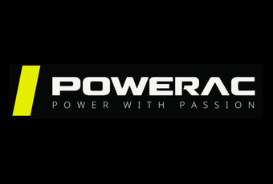

Покупайте генераторы Powerac и не будьте лицемерными соседями 🤪

MITEX 2026 · Россия · Стенд 8С601
Карточка проверена 10 ноября 2026, 09:28 · Источник ↗ · Снимок оригинальной карточки ↗
POWERAC — бренд современной энергетической техники, ориентированный на надёжность, высокую производительность и продуманные технические решения. Основное направление компании — генераторное оборудование для дома, бизнеса, строительства и профессионального применения. Линейка POWERAC включает модели различной мощности и конфигурации, в том числе решения для работы на нескольких видах топлива. Особое внимание POWERAC уделяет качеству оборудования, современному дизайну, удобству эксплуатации и развитию модельного ряда. Мы стремимся создавать технику, которая сочетает высокие рабочие характеристики, функциональность и узнаваемый фирменный стиль. Компания активно развивает дилерское и оптовое направления, выстраивая долгосрочные отношения с партнёрами. POWERAC — это не просто источник энергии, а надёжное решение для тех, кому важны мощность, качество и уверенность в оборудовании.
Контакты ВСТ групп Телефон: +7 (495) 120-05-32 E-mail: hello@powerac.ru Адрес: 115280, Россия, Москва, г. Москва, ул. Ленинская Слобода, д. 19, ком. 21Г Веб-сайт: https://powerac.ru/ E-mail: hello@powerac.ru Телефон: +7 (495) 120-05-32

В доступной карточке нет видео или документов. Смотрите сайт участника.
До десяти последних сообщений каждого найденного канала. Оригинал открывается по ссылке.
Покупайте генераторы Powerac и не будьте лицемерными соседями 🤪
Свеча новая, карбюратор чистый, а генератор все равно плохо заводится . Что это? 🤗 🔔 Причина может быть в тепловых зазорах клапанов. Слишком маленький зазор…

И сразу все понятно 🤩
Новый генератор пахнет горелым при первом запуске - это нормально? 😎 В первые минуты работы может появиться технический запах, а иногда и небольшое количество дыма.…
Процесс съемки Powerac ✨
AVR и АВР — одно и то же ❓ Из-за одинаковых букв эти функции часто путают, хотя задачи у них совершенно разные. ⏩ AVR внутри…
😢 Генератор исправен, но не заводится после долгого простоя? Проблема может быть в старом бензине. Со временем топливо теряет свойства, а отложения забивают карбюратор и…

И снова показываем вам распаковку и запуск нашего прекрасного Powerac PR10000 Diesel Optima 💗
Вы знали ❓ Генератор нельзя просто заглушить под нагрузкой! 👎 Сначала отключите подключенные приборы и дайте двигателю несколько минут поработать без нагрузки. За это время…
Привет! Мы с хорошими новостями 🔥 У нас появился канал на Рутубе. Обязательно подписывайтесь и ждите уникального контента! 💭 Также напоминаем, что у нас есть…